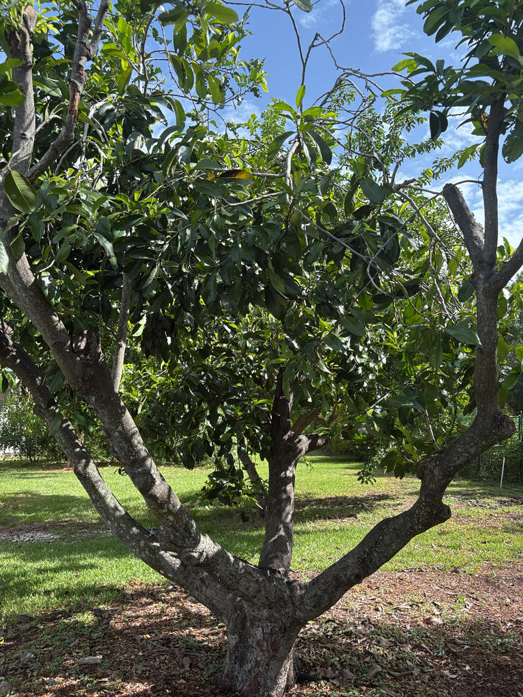

- Ripe, the fruit looks like a green tomato but scoops out like rich chocolate pudding — earning it the name "chocolate pudding fruit."
- There is no actual chocolate involved; the flavor and custard texture are entirely the fruit's own.
- It must be eaten dead-ripe and soft. Unripe, it is hard, bitter, and astringent.
- It is a persimmon relative, and that mahogany-dark, sweet flesh is the family's strangest member.
Native to Mexico, Central America, and Colombia. Long cultivated in its homeland and now grown in tropical and subtropical regions, including South and Central Florida.
- Black sapote is a true persimmon and a member of the ebony family (Ebenaceae) — the same lineage that gives us dense, dark timber prized for centuries. While most persimmons turn bright orange or yellow as they ripen, this species behaves completely differently: its glossy green skin turns dull and muddy as the interior transforms into a dark, sweet, custardy pulp.
- Timing is everything. Picked or eaten too soon, the fruit is rock-hard, chalky, and mouth-puckeringly astringent. Allowed to soften until the skin browns and the flesh turns almost black and jelly-like, it becomes a dessert in its own right, often blended with a little citrus or folded into baked goods.
- The tree is handsome and glossy-leaved, and its dark, dense wood links it to true ebony, the prized timber of the same genus.
The small white flowers attract bees and other pollinators. Ripe and dropped fruit is taken by birds and small mammals, and the dense evergreen canopy offers cover.
A medium to large evergreen tree with a dense, rounded canopy of glossy leaves.
Small, white to greenish, tucked among the leaves.
Round, tomato-like, olive-green ripening to brown-black; soft dark pudding-like pulp inside.
Glossy, leathery, elliptic, dark green.
Round green "tomatoes" hanging among glossy leaves. A ripe one is soft and dull-skinned; cut it to find the dark, custardy flesh.
Black sapote is delicious, but only when fully ripe, soft, and slightly wrinkled — the flesh is scooped straight from the skin or blended into desserts.
Unripe fruit is rock-hard and intensely astringent.
It has no known toxicity to people and isn't ASPCA-listed for dogs; the ripe flesh is harmless in small amounts, though the large seeds or unripe fruit can cause mild stomach upset.


- © Hailee Alenduff (CC-BY-NC), via iNaturalist
- © Denise Sosa (CC-BY-NC), via iNaturalist
- © David McSwain (CC-BY-NC), via iNaturalist
- © Austin Sibrian (CC-BY-NC), via iNaturalist